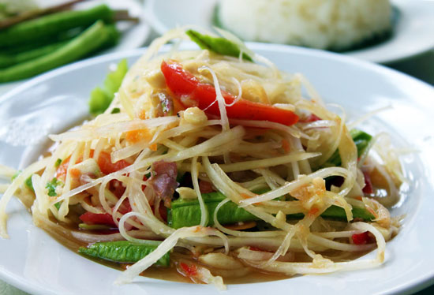

Papaya Salad is refreshingly tart, spicy and sweet. In Thai it's called Som Tam (or Som Tum) and is prepared in a clay mortar with a wooden pestle and served nationwide as a popular restaurant and street food.
Green papaya, malakor in Thai, is central to the dish and available in our online Thai grocery. But, if you don't a green papaya, try substituting shredded cucumber, carrot and daikon radish.
